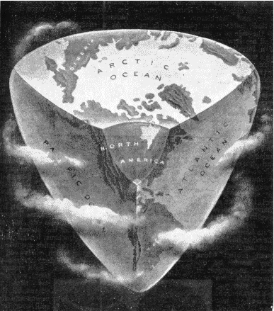

Tuesday, February the 8th, 2005
back to: title, date or indexes
That question is the subtitle of an article in the May 1918 issue of My Magazine. Here are the opening paragraphs:
How would you like to live on a tetrahedron? Men say the earth will one day come to that.
Many strange visions men have had of the world since it began. They used to think it a disc floating in water. There are still stupid people who believe it is flat. Every wise child knows that the truth is that the earth is practically a round ball.
It will not always be like this, however…what the people of the world will live on in millions of years to come will probably be a tetrahedron. It all looks terribly dull, but it is really tremendously interesting… Let us think about it all.
I adore that well-placed “probably”, and it's a bit rich for a tetrahedron-earther to call a flat-earther “stupid”, but look, look!

This is how it will be, and you can read further details here. What you cannot read, maddeningly, is the answer to the question that is posed. I for one want to know what sort of people will live on the tetrahedron. Muggletonians? Quakers? Management consultants? Will they use the Mayan calendar? Will the Pope still wear a little white cap? Will the novels of V S Naipaul be in print? Hooting Yard's indefatigable Antipodean researcher Glyn Webster brought this to my attention. Perhaps he could do the decent thing and answer the question.